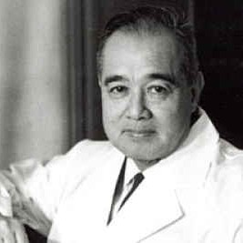
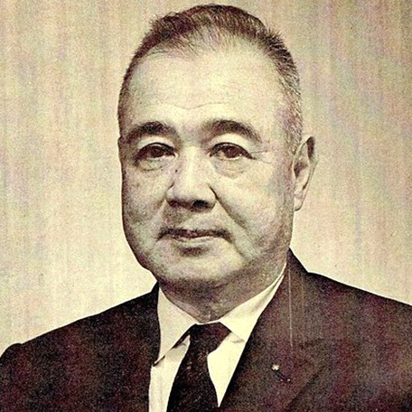
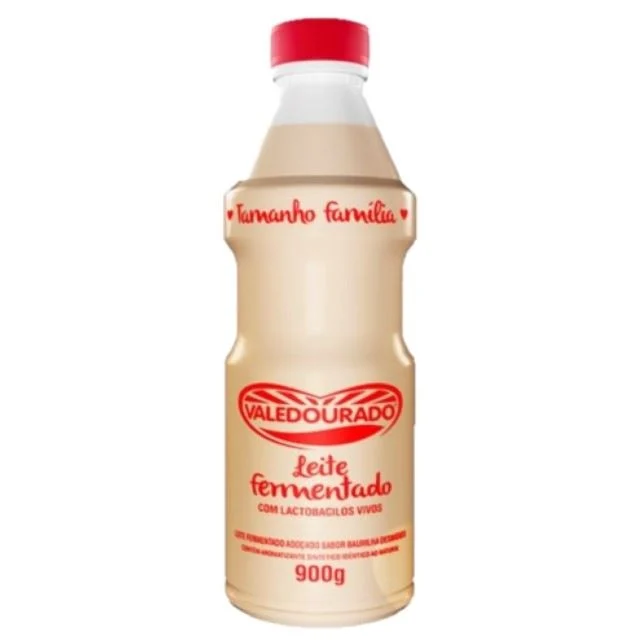

Médico e pesquisador em microbiologia do sistema gastrointestinal, Minoru Shirota foi o fundador da Yakult Honsha Co., Ltd. e do Instituto Central Yakult no Japão. Dedicou-se incansavelmente às pesquisas dos microrganismos promotores da boa saúde, os Lactobacillus casei Shirota, que deram origem ao probiótico Yakult.
O Leite Fermentado Yakult é um alimento à base de leite desnatado, fermentado por lactobacilo selecionado, o exclusivo probiótico Lactobacillus casei Shirota, que resiste à acidez do estômago e chega vivo em grande quantidade ao intestino. A ingestão regular deste lactobacilo, juntamente com uma alimentação equilibrada, pode contribuir com a saúde do trato gastrointestinal.

